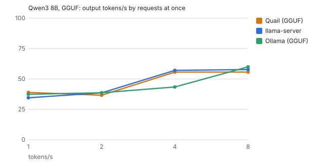
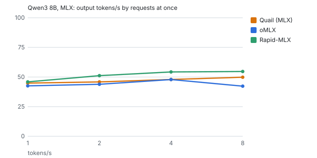
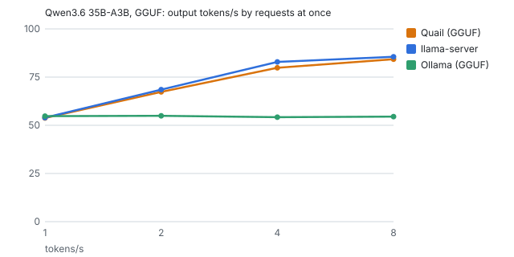
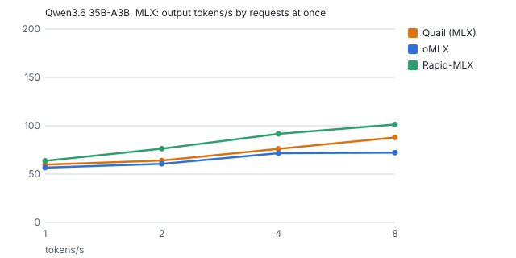
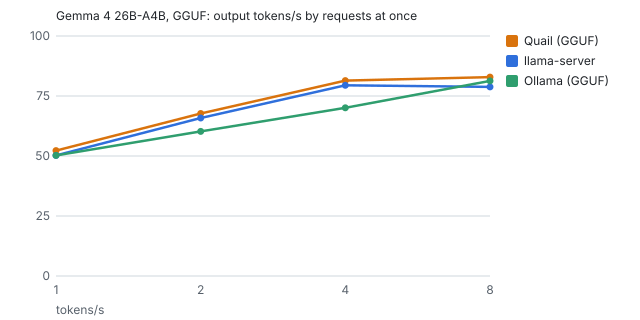
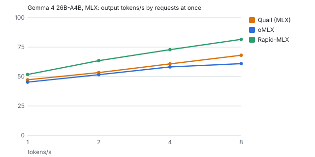

Quail, Ollama, oMLX and Rapid-MLX
Four ways to run AI models on a Mac and give your tools an API. Here's what each does, with a source for every claim, and how they compare when measured on the same Mac with the same weights.
What each one does
| Feature | Quail0.62 | Ollama0.34.4 | oMLX0.6.4 | Rapid-MLX0.15.2 |
|---|---|---|---|---|
| How you install it | Signed, notarized Mac app (DMG or Homebrew cask); no Python source | Signed, notarized Mac app or install script; no Python source | Signed, notarized Mac app with Python inside, or pip source | Homebrew or pip (Python); a separate signed desktop app source |
| Model formats | GGUF and MLX, from one server source | GGUF and MLX (imported into its own store) source | MLX only source | MLX only source |
| OpenAI Chat Completions and Responses | Both source | Both (Responses without stored state) source | Both source | Both source |
| Anthropic Messages (Claude Code) | Yes, with count_tokens source | Yes, without count_tokens source | Yes, with count_tokens source | Yes, with count_tokens source |
| API key | On from the start source | None for the local server source | Asked for by the app's setup; off for the plain server source | Off unless set (the desktop app makes one) source |
| Requests from web pages | Refused unless you allow an origin source | Only from this Mac's own pages and apps source | Any site (CORS *), changed only in settings.json source | Any site (CORS *) unless --cors-origins source |
| Several requests at once | Yes: llama.cpp slots on GGUF, batched decoding on MLX source | One at a time by default (OLLAMA_NUM_PARALLEL); always one for some model families source | Yes, continuous batching (8 by default) source | Yes, continuous batching source |
| Prompt cache | Per conversation; MLX's also kept on disk source | In memory (MLX runner) source | In memory plus an SSD tier that survives restarts source | In memory, saved at shutdown source |
| Speculative decoding | Prompt lookup (fast when a reply repeats its prompt) source | MTP and DFlash on MLX source | DFlash and MTP, per model, off by default source | MTP, DFlash and more; on by default for some models source |
| Embeddings | No source | Yes source | Yes, and reranking source | With an optional extra source |
| Starting coding tools | quail launch, and set-up snippets with a Test button source | ollama launch (about 25 tools) source | omlx launch, and one-click setup in its admin page source | rapid-mlx launch and agent setup source |
| Usage data sent | None (the update check says which version is asking) source | None found (update checks send OS and version) source | Its benchmark uploads results with a hashed device ID source | On by default since 0.15.0 (can be turned off) source |
| Platforms | macOS 14+, Apple silicon source | macOS, Windows, Linux source | macOS 15+ source | macOS source |
| Licence | MIT source | MIT source | Apache-2.0 source | Apache-2.0 source |
Checked 2026-09-29 against each project's own docs, source or release notes at the version shown. Something wrong or out of date? Tell us.
Measured
Quail runs both formats, so it's compared in two lanes, each on identical weights: the same .gguf file against llama.cpp's own server and Ollama, and the same MLX folder against oMLX and Rapid-MLX. Every engine gets the same prompts, the same settings and the same number of requests, one server at a time, on a Mac that's cooled down first.
How the comparison works, and what Quail changed after the first one: How it works.
Measured 2026-09-30 on Apple M1 Max, 64 GB, macOS 27.0.1. The full report has every level, the intervals and the caveats.
Qwen3 8B

| GGUF lane | 1 request, tok/s | 8 at once, tok/s | First token (1 request) | GSM8K | MMLU-Pro | BFCL |
|---|---|---|---|---|---|---|
| Quail | 38.9 | 55.7 | 1,108 ms | 91% | 62% | 88% |
| llama-server | 34.5 | 57.8 | 1,355 ms | 91% | 62% | 88% |
| Ollama | 37.4 | 60.0 | 1,140 ms | 91% | 63% | 89% |

| MLX lane | 1 request, tok/s | 8 at once, tok/s | First token (1 request) | GSM8K | MMLU-Pro | BFCL |
|---|---|---|---|---|---|---|
| Quail | 44.9 | 49.8 | 1,439 ms | 89% | 62% | 91% |
| oMLX | 42.5 | 42.3 | 1,953 ms | 89% | 64% | 91% |
| Rapid-MLX | 45.9 | 54.7 | 1,434 ms | 91% | 62% | 90% |
Qwen3.6 35B-A3B

| GGUF lane | 1 request, tok/s | 8 at once, tok/s | First token (1 request) | GSM8K | MMLU-Pro | BFCL |
|---|---|---|---|---|---|---|
| Quail | 53.8 | 84.3 | 690 ms | 96% | 82% | 92% |
| llama-server | 54.0 | 85.6 | 667 ms | 95% | 80% | 91% |
| Ollama | 54.7 | 54.5 | 634 ms | 95% | 82% | 90% |

| MLX lane | 1 request, tok/s | 8 at once, tok/s | First token (1 request) | GSM8K | MMLU-Pro | BFCL |
|---|---|---|---|---|---|---|
| Quail | 59.8 | 88.0 | 884 ms | 96% | 79% | 92% |
| oMLX | 56.7 | 72.2 | 1,248 ms | 94% | 82% | 91% |
| Rapid-MLX | 63.7 | 101.3 | 870 ms | 95% | 79% | 32% |
Gemma 4 26B-A4B

| GGUF lane | 1 request, tok/s | 8 at once, tok/s | First token (1 request) | GSM8K | MMLU-Pro | BFCL |
|---|---|---|---|---|---|---|
| Quail | 52.3 | 82.9 | 692 ms | 96% | 86% | 90% |
| llama-server | 50.2 | 78.8 | 777 ms | 95% | 90% | 90% |
| Ollama | 50.3 | 81.3 | 726 ms | 95% | 91% | 90% |

| MLX lane | 1 request, tok/s | 8 at once, tok/s | First token (1 request) | GSM8K | MMLU-Pro | BFCL |
|---|---|---|---|---|---|---|
| Quail | 47.3 | 68.1 | 1,022 ms | 85% | 84% | 90% |
| oMLX | 45.2 | 61.0 | 1,395 ms | 89% | 85% | 89% |
| Rapid-MLX | 51.8 | 81.6 | 939 ms | 90% | 85% | 20% |
How it's measured
- Speed: GuideLLM, at 1, 2, 4 and 8 requests at once, with prompts of exactly the same length for every engine. Each engine's own benchmark tool is run too, so a server isn't blamed for its engine.
- Quality: EleutherAI's lm-evaluation-harness on GSM8K and MMLU-Pro, the same questions for every engine.
- Tool calling: the Berkeley Function-Calling Leaderboard's own checker, which scores what an agent actually receives.
- Fair settings: the same context and number of slots, a full-precision KV cache, temperature 0 and thinking off everywhere. A speed difference only counts if it's over 5% and bigger than the spread between runs.
The harness, its settings and every raw result are in the repository: bench/, with the reasoning in ADR D-063. You can run it yourself.